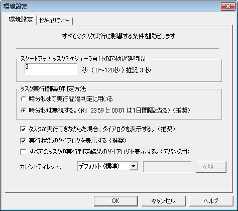
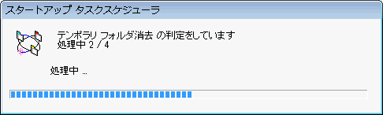
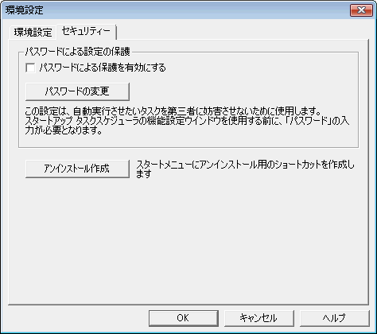
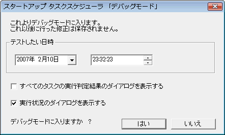

| 機能設定：ファイル メニュー |
|
| 機能設定：ファイル メニュー |
|
注意 ： タスクは最大21個までしか追加できません。
ダイアログの指示に従い、新しいタスクを追加します。タスクは最終行に追加されますが、実行順序の入れ替えにより任意の実行順に出来ます。
選択中のタスクを削除します。
現在のタスクの内容を、レジストリに保存します。
通常は、設定ウインドウを閉じるときに自動的に保存されますが、何らかの理由で強制保存したいときに使用するメニューです。
タスクスケジューラの一般的な設定をします。

スタートアップタスクスケジューラが最初のタスクの実行判定を開始するまでの時間で、この秒数が経過するまでは何もしません。
 通常は３秒くらい
通常は３秒くらい
１日の判定を、時分秒まで考慮して判定するか、無視するかです。
たとえば１月１日13時14分の１日後が１月２日０時０分以降となるか、１月２日13時15分以降となるかの違いです。
 通常は時分秒は無視する
通常は時分秒は無視する
タスクに指定されているファイルが存在しない等の理由で、実行できなかったときに、ダイアログを表示します。
 通常はＯＮで使用
通常はＯＮで使用

ユーザーに本ソフトの動作を隠したい場合はOFFにすると良いでしょう。
 通常はＯＮで使用
通常はＯＮで使用

タスクがどのような理由で実行されなかったのか（スキップされたのか）を表示します。
これは、エラー表示ではありません。デバッグ時に役に立つでしょう。
 通常はOFFで使用
通常はOFFで使用
タスク実行時のカレントディレクトリを設定します。
タスクごとの「作業フォルダ」を指定しない場合は、このディレクトリがタスク実行時のカレントフォルダになります。
デフォルト（通常） →
カレントディレクトリの明示的な移動を行いません
sTaskのディレクトリ → sTaskプログラムの格納されているフォルダ
ユーザ指定 → 任意のフォルダを指定できます
※ 適用順序 ： カレントディレクトリ → タスクごとの作業フォルダ
 通常はデフォルトで使用
通常はデフォルトで使用

設定ウインドウを表示するために、パスワードの入力を必要とするかどうかの設定です。なお、設定をONにするには、パスワードが必要です。
なお、個々のタスクの実行に対してのパスワードの設定は出来ません。
 通常はOFFで使用
通常はOFFで使用
本製品では、パスワードを含む全てのデータを暗号化せずにレジストリに格納しています。そのため、レジストリを解析することにより、パスワードは解析可能です。個々に設定するパスワードは、ネットワークなどで使用するような重要なパスワードと同一のフレーズは設定しないでください。
※ 全ユーザ共通実行設定（アドミニストレータ・モードでインストールされた）場合、個別のユーザの初期パスワードはNULLストリングです。パスワードを使う必要がある場合、適宜変更してください。
パスワードを忘れた場合は、本ソフトを一旦アンインストールした後、再度インストールしてください。（または、レジストリを解析してください
:-）
パスワードに関する質問には作者は一切お答えしません。
スタートメニューにアンインストール用のショートカットメニューを作成します。アンインストーラをどこから起動してよいか分からなくなったときなどに利用してください。

任意の日時でのタスク実行をシミュレートするモードです。
シミュレートしたい日時を入力し、「OK」を押すとシミュレートが開始されます。
デバッグモードに入った状態では、環境設定を含むすべての変更・追加などの情報はレジストリに保存されません。これまでの変更内容等をレジストリに保存する場合は、「変更を（レジストリに）保存する」コマンドを実行してください。
デバッグモードに入った状態で、再び「デバッグモード」コマンドを実行すると、デバッグモードから抜けるかどうかを問い合わせるダイアログが表示されます。
デバッグモードから抜ける場合は「OK」を押します。レジストリから以前のデータを読み込んで復元します。「キャンセル」を押した場合は、再びデバッグモードでのシミュレートに入ります。